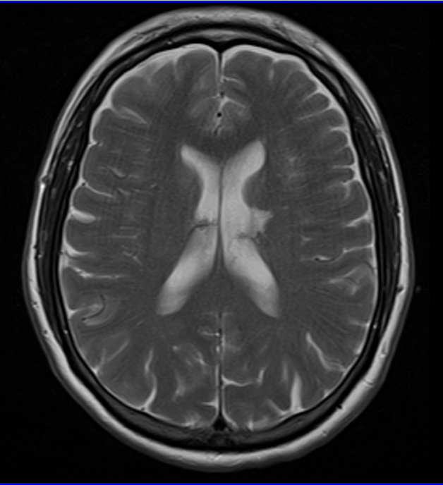

Erro comum desmontado · Pág. 02 de 07
Idoso: a cicatriz do AVE, não o AVE abrindo a crise
Muitos fecham assim: crise no idoso = AVE abrindo agora. O padrão, porém, é outro — e é o que a prova e a porta confundem.
O erro que seduz
“Crise no idoso é o AVE sangrando e convulsando no mesmo tempo.” — Essa narrativa de pronto-socorro confunde tempo do stroke com tempo da sequela. O padrão etiológico da crise de início tardio passa pela cicatriz, não pelo flash agudo.
AVE — principal no idoso
No idoso, o principal motivo de crise que começa nessa faixa etária é o AVE. O AVE mais comum nesse papel etiológico é o isquêmico. Pode ser hemorrágico, mas o mais comum é o isquêmico.
O padrão: cicatriz → foco → crise
Padrão típico: AVE isquêmico → cicatriz → a cicatriz vira foco epileptogênico → epilepsia/crise.
Não é “o cérebro sangrando agora e convulsando no mesmo tempo” como história-modal. É a lesão antiga que se torna terreno epileptogênico.
O que NÃO é o padrão
Pegadinha: o padrão não é o paciente abrindo o quadro de AVE com a crise. Abrir AVE isquêmico com crise pode acontecer, mas não é o padrão.
Tumor no mapa etário
Tumor cerebral tem prevalência maior em idosos — entra no diferencial etário junto com o eixo AVE/cicatriz.
Regra de fechamento: adulto e idoso investigam com imagem; no idoso, AVE (isquêmico → cicatriz) e tumor estão no topo do mapa.

Padrão vs. atípico
Padrão (mais cobrado)
AVE isquêmico → cicatriz → foco → crise/epilepsia
História: evento vascular prévio + crise tardia.
Possível, mas atípico
AVE isquêmico abrindo com crise
História: crise como apresentação do AVE agudo.
Não confunda
- AVE agudo abrindo com crise ≠ epilepsia sequelar de cicatriz — tempos e condutas diferentes.
- Isquêmico mais comum no papel etiológico; hemorrágico existe, não é o default.
Revisão ativa
- Qual a sequência causal padrão no idoso?
- Por que “crise = AVE agora” é armadilha?
- Além do AVE, o que sobe no diferencial etário?
Quiz
Conexão
Etiologia instalada; agora a classificação da crise decide tratamento e pensamento sindrômico.